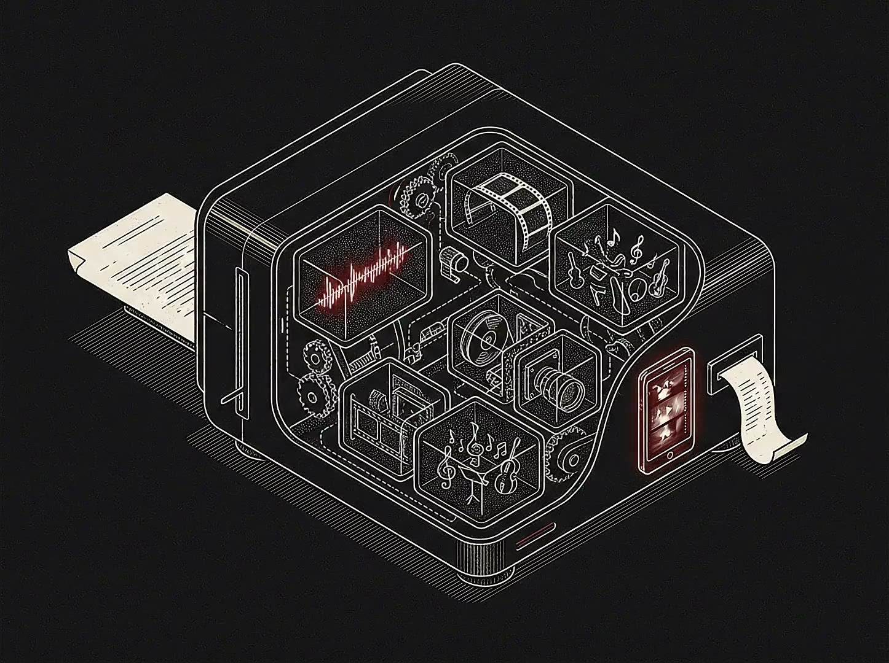

One script in, a produced short out.
A quick-cut production workflow for newsroom and brand content teams shipping short-form video on the ElevenLabs stack. Behind it: eight years producing live news, then years building content systems at Google. This pipeline is the two crafts merged. It takes a plain-text script and orchestrates narration, score, sound, visuals, and an optional dub into a finished, captioned cut, and it logs every generation step to a costed, reproducible run manifest.
TL;DR: one script file in, a captioned and dubbed short out. $8.26 of logged cost carried by the artifacts in the cut. Every stage gated and receipted. A customer team runs the next one from the handoff kit.
read the narration
Hi, I'm Mitchell Williams. broll-pipeline is a quick-cut production workflow I built for newsroom and brand teams shipping short-form video on the ElevenLabs stack. Two crafts merged: eight years producing live news, then years building content systems at Google. Feed it one plain-text script, and it orchestrates narration, score, sound, visuals, even an optional dub, into a finished, captioned cut. Every generation step logs to a costed, reproducible run manifest. The demo film is fifty-three seconds: six beats are motion graphics rendered from the pipeline's own artifacts, and ten are AI-generated shots directed by a creative council and checked by a review board. All in, retakes included, that cut cost fourteen dollars and twenty cents. But the point isn't the fifty-three seconds. It's the loop: understand a production pipeline, prototype an AI-native replacement, and package it so a customer can run it themselves.

The film is the pipeline explaining itself: the machine narrating how it replaced the crew, every claim rendered from the run's real artifacts. 1080×1920, 53s, sixteen beats cut 2-4 seconds each. Six beats are motion graphics rendered in code from the pipeline's own artifacts (the real script, the real cost manifest, the real reroll command); ten are AI-generated shots directed by a creative council and inspected by its review board. Narration and score generated live through the ElevenLabs API, then gain-staged to measured loudness targets with the voice always on top, gated by a blind audio review that listens to the cut with zero context. The pipeline also carries a per-shot video-to-audio foley stage; for this screen-heavy cut the sound-design call was voice and score only, because footage without physical action on camera does not motivate natural sound. The Spanish dub came from the same cut. Captions from the pipeline's own timing.
The point is not the 53 seconds. The point is the loop: understand a production pipeline, prototype an AI-native replacement, package it so a customer can copy it. That loop is the job.
The problem, in business terms. A comms or newsroom team needs to ship short explainers on a daily cadence without burning out editors. Today that means a scripter, a voice artist, an editor cutting b-roll (the supporting footage laid over a narration), and a captioning pass, measured in hours per finished minute. The question a forward-deployed creative gets asked is not "can AI make a video," it is "can you turn our existing pipeline into one a small team runs before lunch, and can you prove what it costs."
The shape of the answer. One input file, input/script.md, holds the whole brief: one beat per block, each with a line of voiceover, a visual prompt, and a target duration. The orchestrator parses that into beats, fans the audio across the ElevenLabs modalities, renders or generates each beat's visual by its declared mode, then ffmpeg cuts everything to the voiceover's timing and muxes a toggleable caption track. Every stage caches its output keyed by a content hash, so a re-run only regenerates what actually changed. That is the difference between a demo and a workflow a team will keep using.
Model choices, and one honest boundary. The audio stack runs end-to-end through the ElevenLabs API: Text-to-Speech for narration, Eleven Music v2 for a licensed, commercially-cleared score, the Sound Effects API for accent beats, and Dubbing for the Spanish cut. Video generation sits behind a pluggable provider adapter: one thin module the pipeline calls per beat, routed today to a text-to-video model (Veo 3.1, via fal.ai); swapping providers is a config change, not a rewrite. And the beats that carry the pipeline's own evidence, the script, the cost manifest, the reroll command, the receipt, are not generated at all. They are rendered deterministically in code from the real artifacts, because for those shots the proof reads better than a prompt. Knowing which beats deserve a model and which deserve the actual data is the judgment call the role is about.
The manifest is the evidence. Every API call appends to output/run-manifest.json with model, params, cost, and latency; cached artifacts carry their original cost forward, so the receipt reflects the whole cut, not just the last re-run. The committed manifest carries $8.26 for the artifacts in this cut: $0.28 for the complete audio stack, $4.40 for the ten generated shots, $3.50 for creative direction, $0.08 for clip review; summing the committed manifest reproduces it line for line. Getting to the shipped version cost more as it ran: the review board's extra re-rolls of one stubborn text-bearing shot, a full score re-render, the foley experiments, and the Spanish dub renders were logged at build time and brought the at-build ledger to about $14, spend a post-cut re-render no longer carries. One honesty note on the video itself: beat twelve renders the manifest as a thermal receipt, and it baked the manifest state at cut time, $9.51 carried, before that consolidation. That single file answers the customer's real question, "what does one finished minute cost," without a spreadsheet or a guess.
The creative council. Prompting shots one at a time produces b-roll that reads as disconnected stock, so generation is directed by a council of seven specialist personas (cinematographer, story producer, video researcher, sound designer, motion designer, music composer, audience-engagement expert) running in parallel on the Anthropic API. A creative director synthesizes their notes into one edit decision brief: a single visual system, a hook for the first two seconds, pacing built for short attention spans, and sound design motivated by what is on screen. After generation, the council's review board inspects frames from every generated clip against the brief, rejects unacceptable takes, and re-prompts and regenerates them. The ten shots in this cut share one visual system the council wrote, and several are retakes the review board demanded. Sound gets the same treatment: stems are gain-staged to measured loudness targets and mixed with the voice always on top, and a blind audio reviewer that can actually hear the cut scores the mix with timestamps until it is fit to ship. The pipeline also carries a per-shot video-to-audio foley stage (a model watches each shot's frames and scores the natural sound a live microphone would have caught); the sound-design judgment for this cut was to leave it out, because screen-heavy footage with little physical action does not motivate foley, and invented sound reads as artifact. Knowing when not to add sound is part of the craft.
Where a human still touches it. Script approval, brand and legal sign-off, voice selection, and a caption QA pass all stay human. Naming those seams is not a weakness to hide; it is what separates an enterprise-realistic workflow from a toy. The pipeline removes the mechanical hours and leaves the judgment where it belongs.
parseScript reads input/script.md into timed beats, each carrying its narration line, visual direction, and target seconds. Deterministic and free; every stage below works from this plan.POST /v1/text-to-speech/{voice_id}. A cloned voice makes the whole short sound like one presenter.ElevenCreative Flows is ElevenLabs' node-based canvas: generation steps chained output port to input port, re-runnable one node at a time, with 50-plus image and video models sitting beside the audio stack (per the Flows documentation as of July 2026; the product is in alpha and moving). This pipeline runs as external orchestration today, and its stages map onto the canvas almost one to one. Here is the translation, node by node.
What moves onto the canvas: the five generation stages. Narration becomes a Text to Speech node, the score a Music node, accent sounds a Sound Effects node, the directed shots Image and Video Generation nodes carrying the same per-beat prompts, and the layered preview a Composition node that exports straight to ElevenCreative Studio when a cut needs timeline-level finishing. Flows re-runs a single node and touches only its downstream path, so the retake economics the receipt below prices stay intact: fix one shot, pay for one shot.
What stays in external orchestration, for now: script parsing, the run manifest, the cost ledger, QA gates, and automated retakes. Flows bills per node execution and its programmatic API is on the product roadmap rather than shipped, so the accountability layer this page demonstrates still lives in code wrapping the canvas. That boundary, what belongs on the canvas versus what belongs in the wrapper, is a real deployment decision and the first thing I'd map with a customer team.
How it ships: build the flow once, save it as a template, and share it at the workspace tier. The customer's operators then reuse the same graph with different inputs per campaign, and a template shared by link travels to an agency partner without workspace access. The handoff kit below is written for exactly that moment: the next piece gets made by a creative teammate, not by the engineer who drew the graph.
The role this pipeline argues for isn't "builds pipelines", it's "leaves the customer able to run them." So the handoff artifacts are part of the artifact. Four files, written for a producer, not an engineer: the example script with the beat format documented inline, a config template, the cost model with the math shown, and an operator runbook that covers the happy path, the retake path, and what to do when a stage fails.
The runbook is the test of the whole idea: if a mid-level producer can't run the next short from it without me in the room, the handoff failed. Every gate it references maps to a customer-deployment analog on the systems page.
Understand the pipeline. Prototype the replacement. Package it so it travels. Teach it. The short is proof of craft; the manifest and the template are proof I can hand it to a customer and have it still work after I leave.
A forward-deployed creative is a creative solutions architect and an enablement lead, not a designer for hire. The job: embed with a customer, understand their production pipeline, prototype an AI-native replacement, package it as a template, teach it. That is the loop this artifact runs. It is also the loop I ran for eight years in live newsrooms and then at Google, building production AI enablement since 2024 for a community of 1,000+ senior engineers.
Against the posting, this page is direct evidence of four requirements: "build and demonstrate AI-powered creative workflows", every ElevenLabs modality driven live rather than described; "design reusable workflow templates, guides, best practices", the Flows mapping and the handoff kit; "translate technical capability into creative and business opportunity", the receipt and the retake economics; "localization and dubbing", the Spanish and Japanese cuts above.
The full pipeline code, demo script, and the run manifest that produced this cut are public at github.com/mitwilli-create/broll-pipeline.